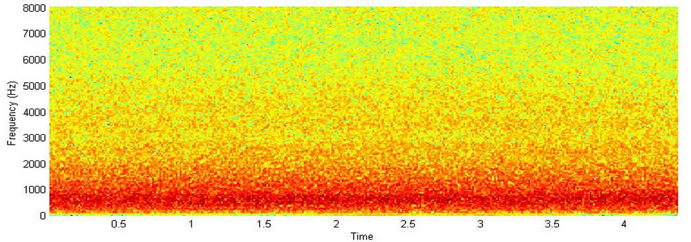
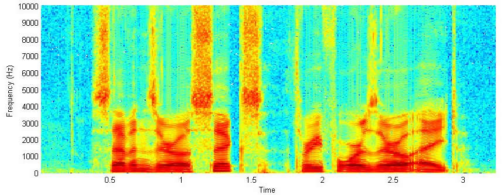
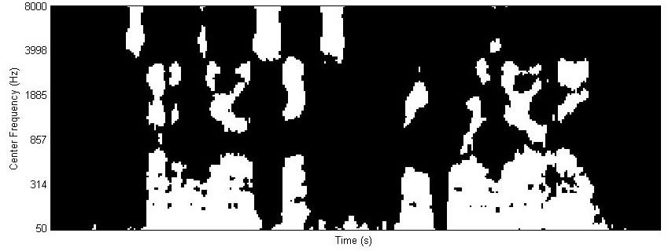
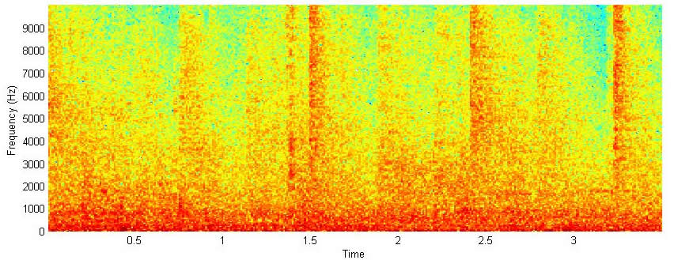
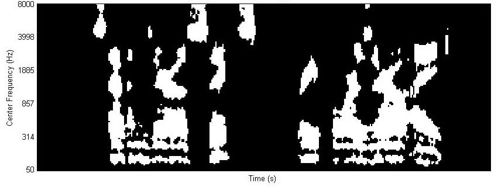
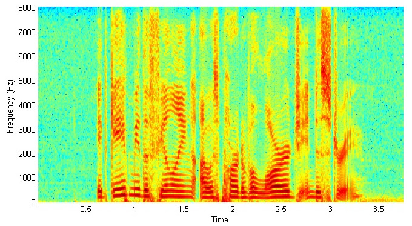
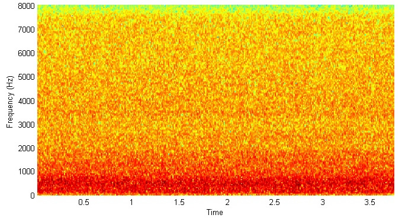
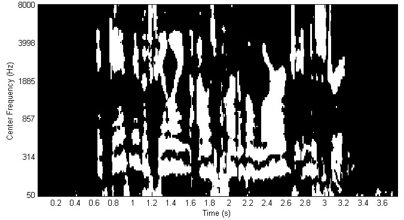
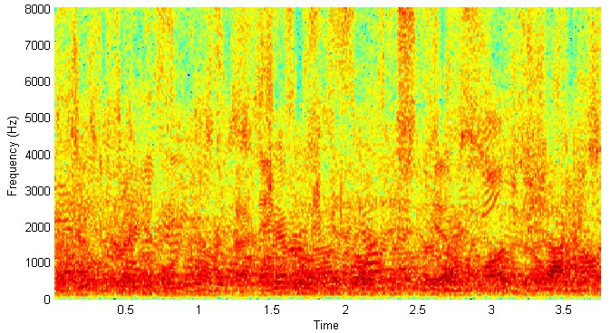
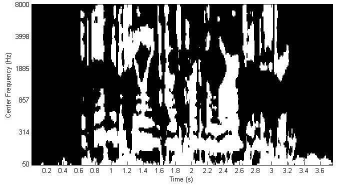

This page demonstrates a new phenomenon that noise turned on and off properly in a time-frequency
representation can produce intelligible speech. More specifically, pure noise masked (or gated) by the ideal binary mask (IBM) yields intelligible speech. Thanks for Arun Narayanan who created this page in Oct. 2012.
See the following papers for describing the basic phenomenon:
Wang D.L., Kjems U., Pedersen M.S., Boldt J.B., and Lunner T. (2008): Speech perception of noise with binary gains. Journal of the Acoustical Society of America, vol. 124, pp. 2303-2307.
Kjems U., Boldt J.B., Pedersen M.S., Lunner T., and Wang D.L. (2009): Role of mask pattern in intelligibility of ideal binary-masked noisy speech. Journal of the Acoustical Society of America, vol. 126, pp. 1415-1426.
This demo uses speech shaped noise and the IBM patterns shown below. Can you understand the resulting signal?
 Spectrogram of speech shaped noise |
IBM patterns |
The second demo is based on a digit utterance from the TIDigits corpus.
 Spectrogram of clean speech |
|
|
Spectrogram of speech shaped noise  The IBM pattern |
|
 Spectrogram of factory noise  The IBM pattern |
The next demo is based on an utterance from the Wall Street Journal (WSJ0) corpus:
 Spectrogram of clean speech |
|
 Spectrogram of speech shaped noise  The IBM pattern |
|
 Spectrogram of babble noise  The IBM pattern |